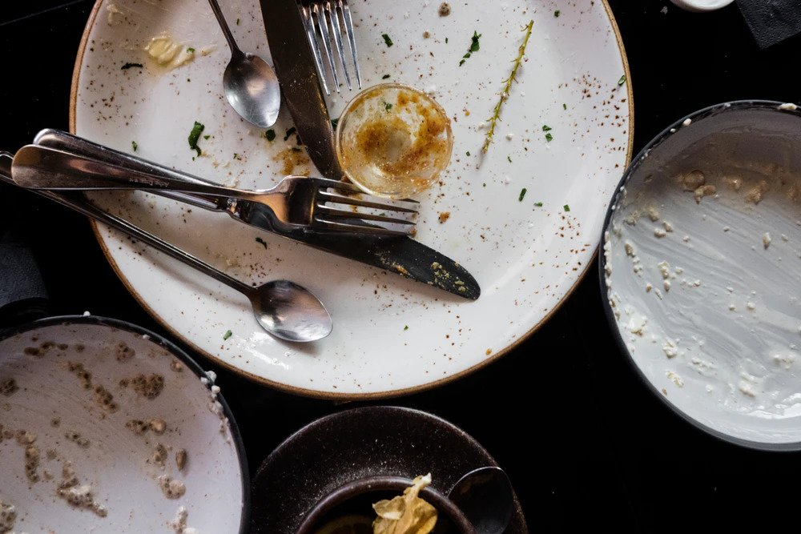
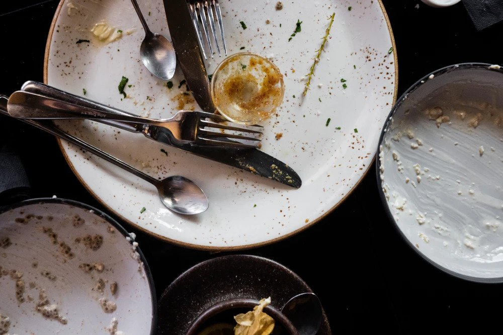

Train:
Candidates: 0, 1, 2, 3
 

Intended concept: Neatly arranged place settings (complete with cutlery and wine glasses).
Solution provided by tool:
The chosen answer is 0.
The discriminator is: Forall q0: spoon!0. Forall q1: fork!1. And(left!1!0)